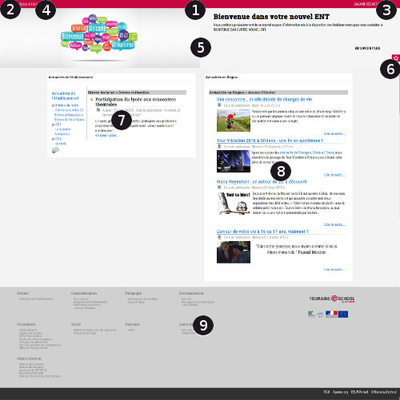
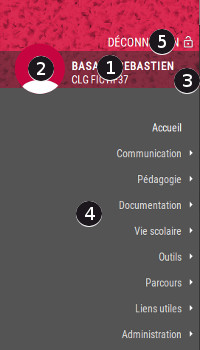

Aide ENT > Aide pour le portail
après connexion
Page d'accueil
Une fois connecté à l'ENT, l'utilisateur accède à sa page d'accueil
et va pouvoir utiliser les services mis à sa disposition par son
établissement d'enseignement.
La page d'accueil standard est composée d'un certain nombre de zones
détaillées ici :

1 - Bandeau de l'ENT
2 -
Menu de l'ENT permettant d'accéder aux
services
3 - Informations sur l'utilisateur connecté et accès à la
déconnexion
4 - Établissement courant de l'utilisateur
5 - Carrousel de présentation d'informations
6 - Accès aux services
favoris
de l'utilisateur
7 - Vue sur les actualités de l'établissement
8 - Vue sur les actualités de la collectivité (si disponible)
9 - Pied de page, avec le plan des services disponibles à
l'utilisateur
Le menu de ENT
L'accès aux services de l'ENT se fait en cliquant sur le bouton menu
qui présente le menu de l'ENT dans le style suivant :

1 - Informations concernant l'utilisateur connecté
2 - Bouton permettant l'accès à "
Mon
compte ENT" ainsi qu'à la déconnexion de l'ENT
3 - Accès au
changement
d'établissement courant pour les utilisateurs exerçant leurs
activités sur plusieurs établissements
4 - Menus et sous-menus de l'ENT, permettant l'accès aux services mis
à disposition par l'établissement
5 - Bouton de déconnexion de l'ENT
Après avoir utilisé les services de l'ENT, il
est indispensable de se déconnecter pour éviter tout risque
d'usurpation d'identité et d'utilisation frauduleuse des services de
l'ENT.